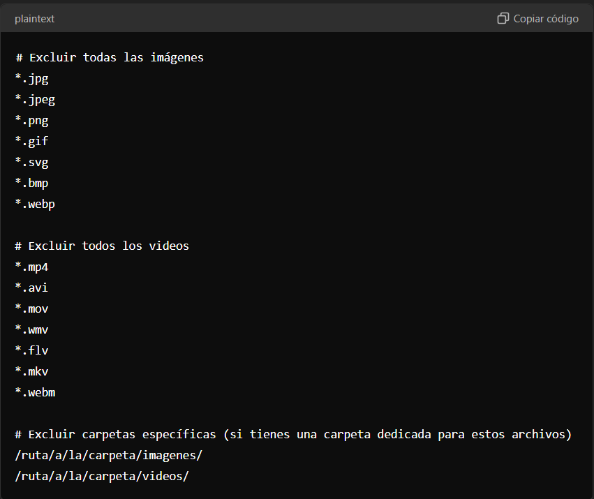
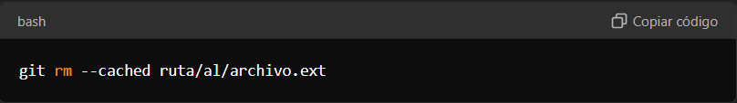
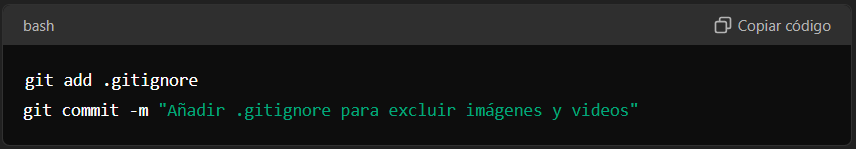

¿Como usar GitIgnore?
Paso 1: Crear el archivo .gitignore
- Abrir el proyecto en tu editor de texto o IDE favorito.
- Crear un archivo llamado .gitignore en la raíz de tu proyecto (si no existe ya).
Paso 2: Configurar .gitignore para excluir imágenes y videos
- Abrir el archivo .gitignore.
- Agregar las siguientes líneas para excluir archivos de imagen y video:

- El * es un comodín que indica "cualquier nombre de archivo" con las extensiones especificadas.
- Si tienes carpetas específicas para imágenes o videos, puedes incluirlas para ignorar todo su contenido.
Paso 3: Guardar y verificar
- Guardar el archivo .gitignore.
- Verificar que los archivos no rastreados se excluyen correctamente:
- Si ya tenías algunos archivos de imagen o video rastreados por Git, tendrás que eliminar su rastreo manualmente con los siguientes comandos: 
- Luego, confirma que no aparecen al ejecutar git status.
Paso 4: Confirmar los cambios
- Añadir y hacer commit de tu archivo .gitignore: 
- Listo! A partir de ahora, Git ignorará los archivos de imagen y video que hayas especificado en el archivo .gitignore.
Este procedimiento te permitirá mantener tu repositorio limpio de archivos pesados como imágenes y videos, y facilitará la gestión del código fuente.